- Undervisngen inden for dette enme bestod af UX/UI metoder, dvs at lærer omkring processen hen af vejen. Vi fik prøvet kræfter med design udvikling af produktet og løsninger, samt at afprøve forskllige research-og test. I UX / UI temaet fik vi en grundlæggende forståelse for samspillet mellem brugere og brugergrænseflader. De fagelementer vi fukuserede på i undervisningen var teknologi, metoder og principper indenfor frontend udvikling. Måden man brugte disse fagelementer var ved brugertest, brugerforståelse, og brugeroplevelser. Et element af undervisngen som fyldte meget hvordan man præsentere denne process og aflæser testeresulater som skal formidles vidre. Hele udvikingsprocessen og de andvendte løsninger skulle præsenteres i en fremlæggelse hvorpå hovedessensen var sin egen process og hvordan man aktivt valgte at løse opgaven.
GRUNDLÆGGENDE UX/UI
- Brugergrænsefalder | UX -designerens rolle på tværs af design discipliner og arbejde i iterative processer. User Experienc Design (UX)
- Brugeroplevelser | UX/UI konventioner ,prototyping ,usability og testing.
- Indhold | praksisnære principper og metoder til planlægning og produktion af indhold.
- Designbrief, research, indsigt, inspirationssøgning, grafiskanalyse, ideudvikling, sketching, moodboard, wireframing, mock-up, styletile, prototyping og testing. At udvikle et site i html,css og ud fra digital prototype og layoutdiagram.
-
- Figma Research, Indholds tilrettelæggelse og behandling. Indsigts drevne iterationer UX/UI konventioner, Brugerensoplevelse af et digitalt produkt og Userstories.
-
Test - Tænke-højt tests, 5-second test, Light house test, BERT
Opgave beskrivelse |
Denne opgave var individuel og præget af vores egne valg,
hvilket betød, at vi selv
bestemte,
hvad websitet skulle
handle om.
Denne proces introducerede os til kreative løsninger og idéudvikling.
Ideen
skulle
komme fra vores egne
interesser, hvorpå vi lavede mindmaps og
udviklede koncepter samt målgrupper.
Jeg valgte at anvende princippet Modernisme i udtrykket af mit visuelle design.
Et værktøj,
som
jeg benyttede meget
under dette emne, var Figma, som viste
sig at være meget effektivt. I Figma gjorde jeg min
vision levende ved at bruge
funktionen, der gør det muligt at teste sin prototype, inden man går i gang med at kode.
I dette tema blev vi introduceret til vigtigheden af at teste og
korrigere baseret på de
svar,
man fik fra testen.
Jeg
fik rigtig gode resultater fra min test.
Alle resultaterne var som forventet, så jeg
behøvede
ikke at foretage de
store
ændringer i mit design.
Den færdige kode viste også gennem Lighthouse-testen, at mit website
var
funktionelt,
og kun få
rettelser var nødvendige, såsom omformatering af billeder til webP.
Det sværeste ved denne opgave var CSS-delen af kodningen, som jeg derfor var ekstra opmærksom på
at forbedre i løbet af
semesteret.
Da vi afsluttede projektet, skulle vi lave en prøveeksamen, hvor vi
præsenterede
hele vores proces. Her
skulle vi komme ind på forskellige
designprocesser og koden. Den proces,
jeg gennemgik,
var
en
læringskurve, der kun gik
opad. Hele projektet gav mig en masse værktøjer til fremtidige projekter og opgaver.
-
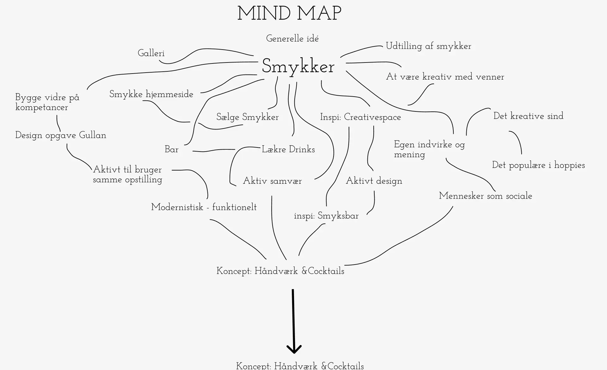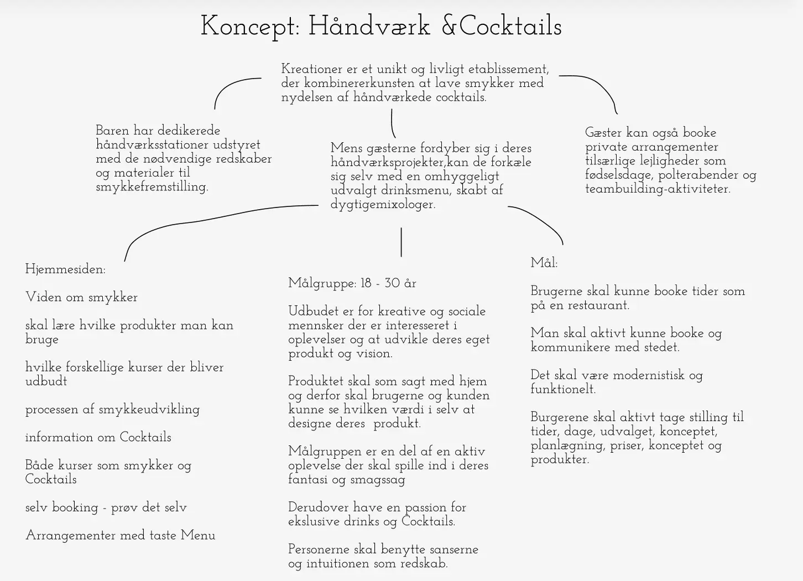
Moodboard
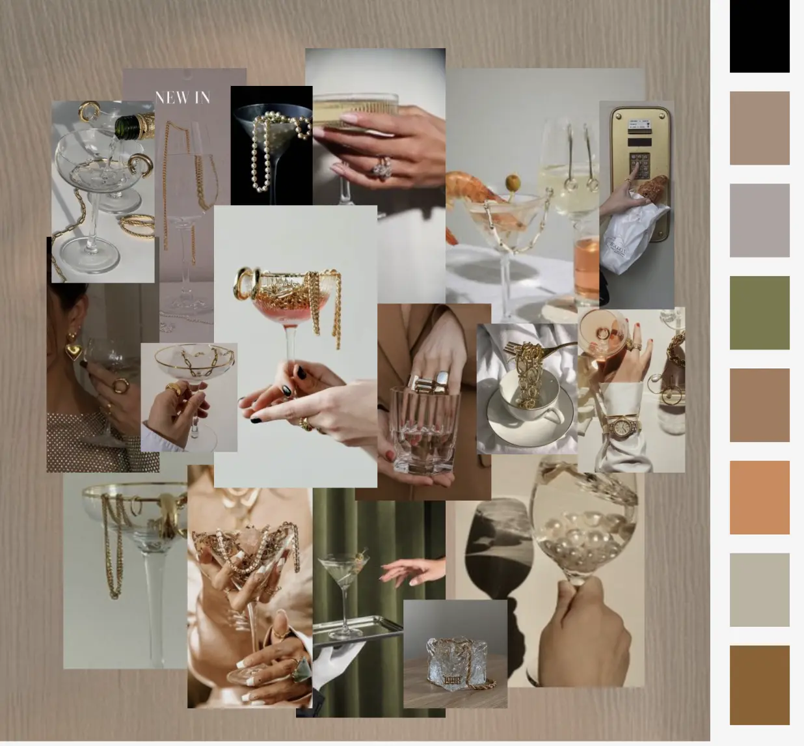Userstory og Målgruppe
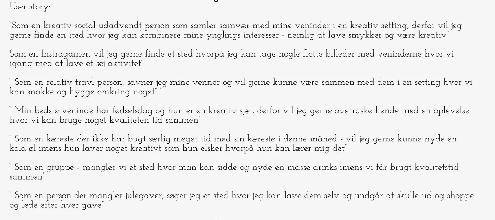 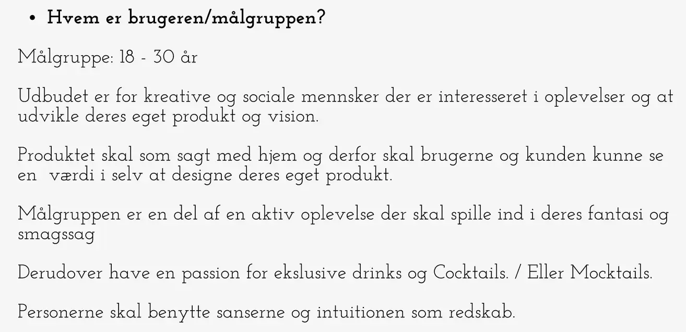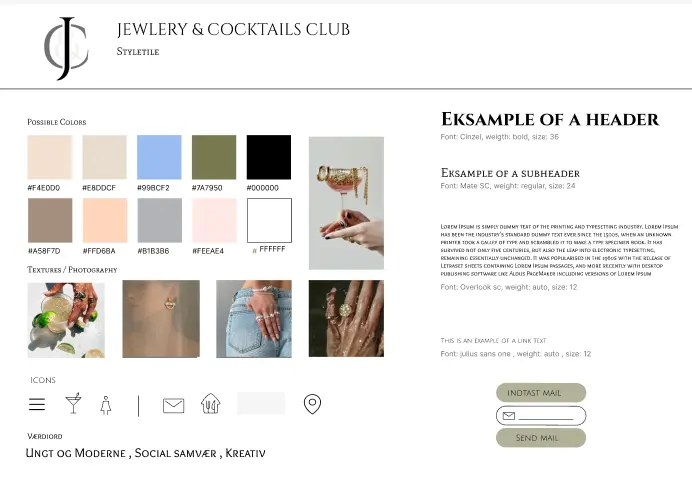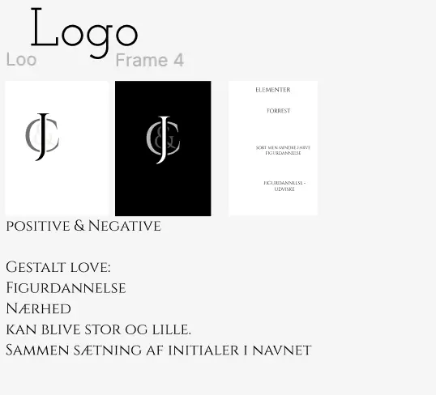Wireframe
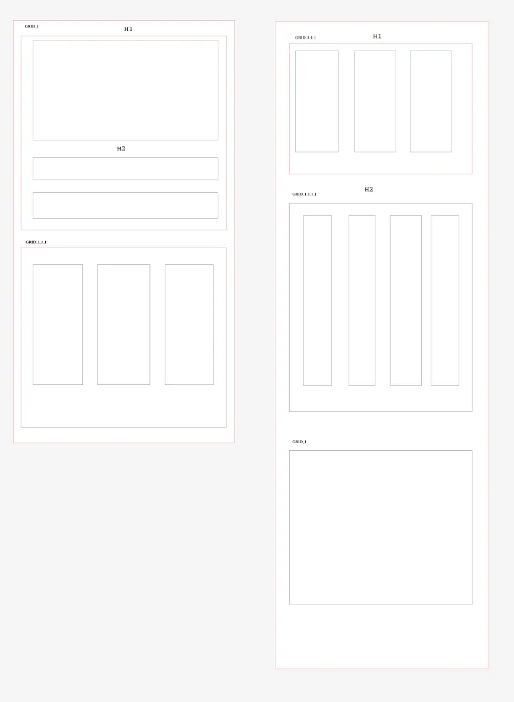Prototype
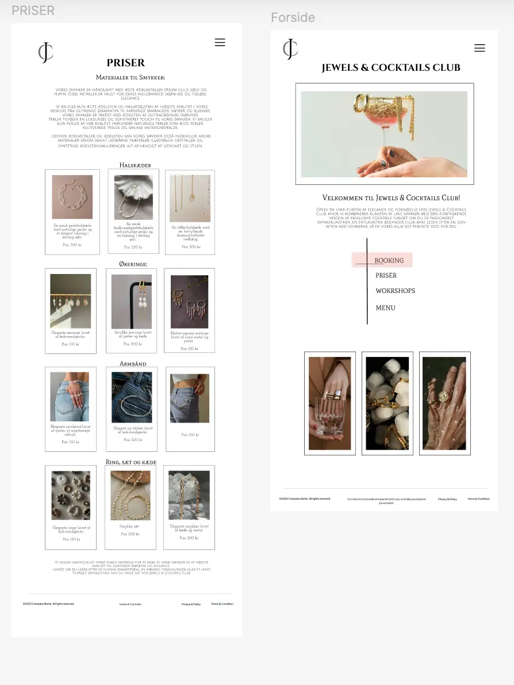Test og resultater
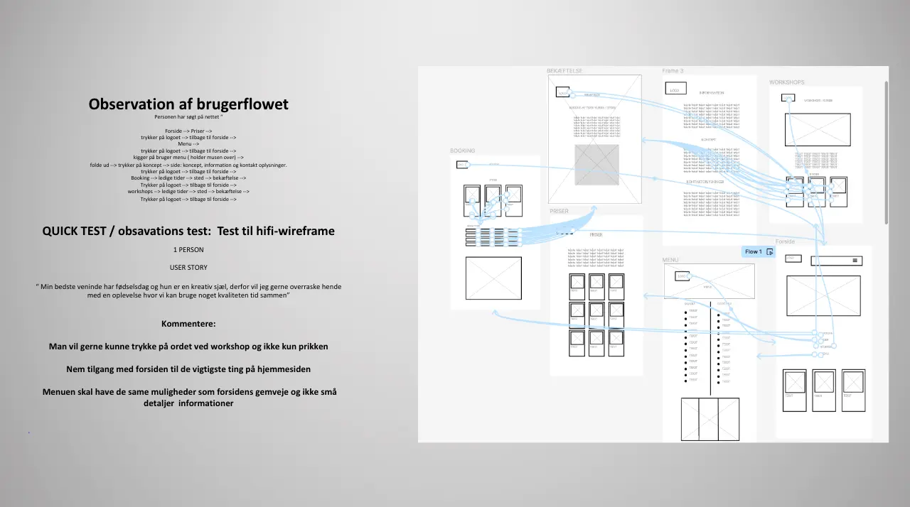 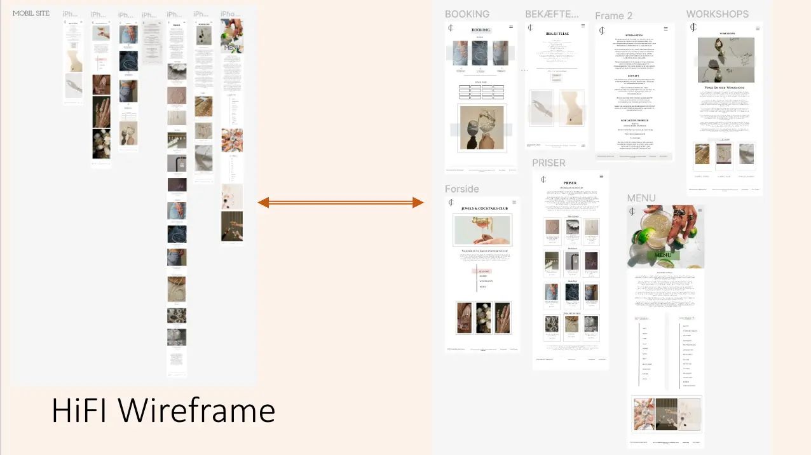Test af digitalprototype og kodetsite
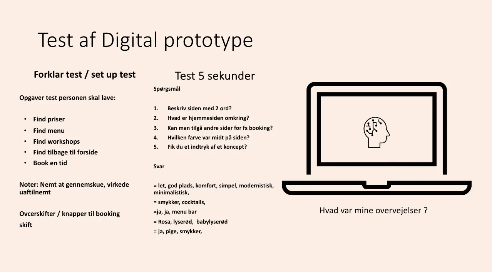 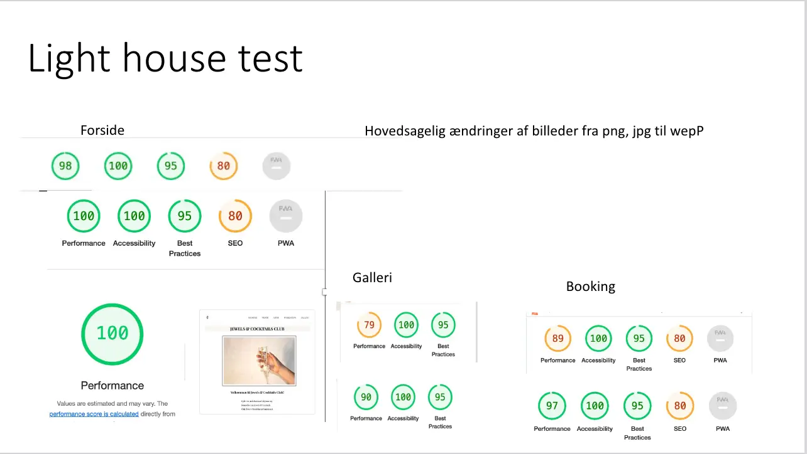